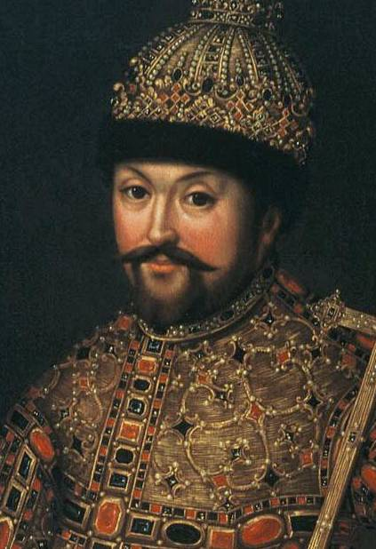
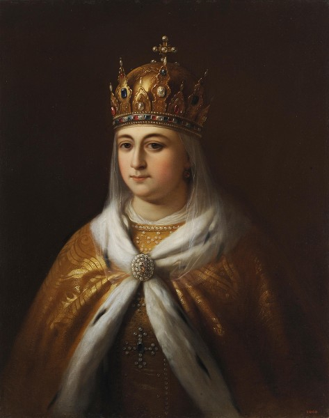
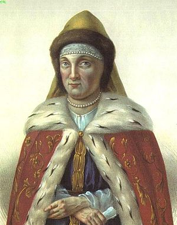
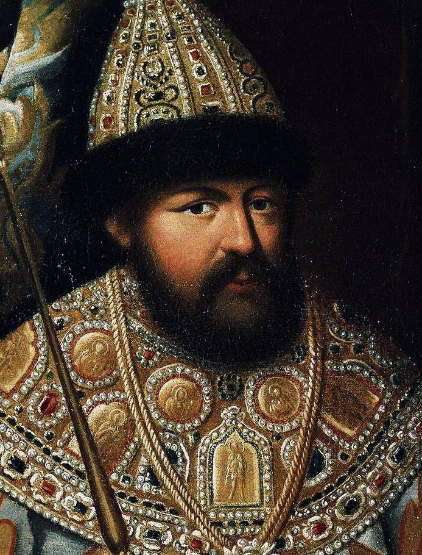
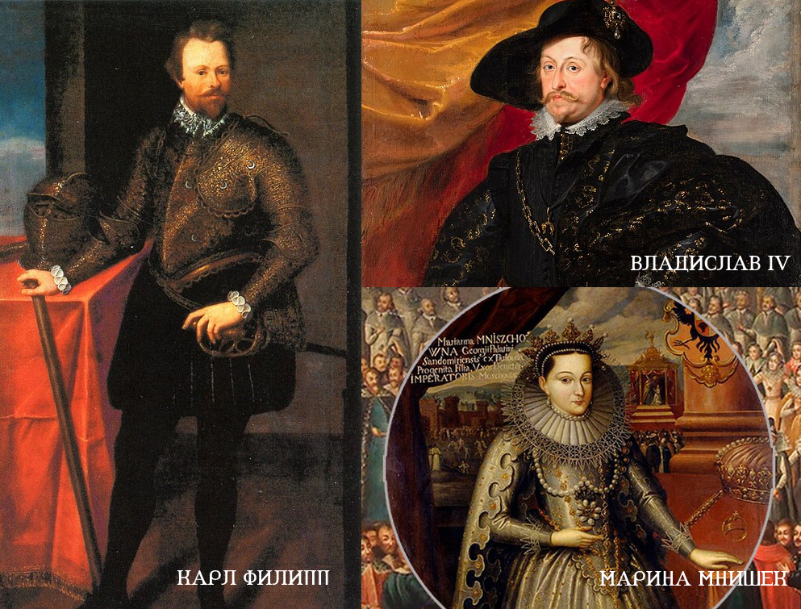
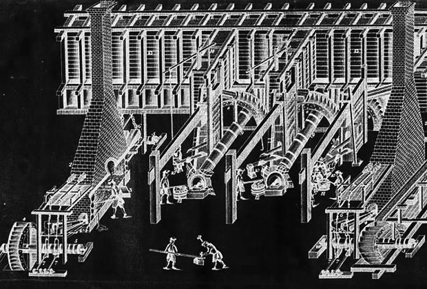
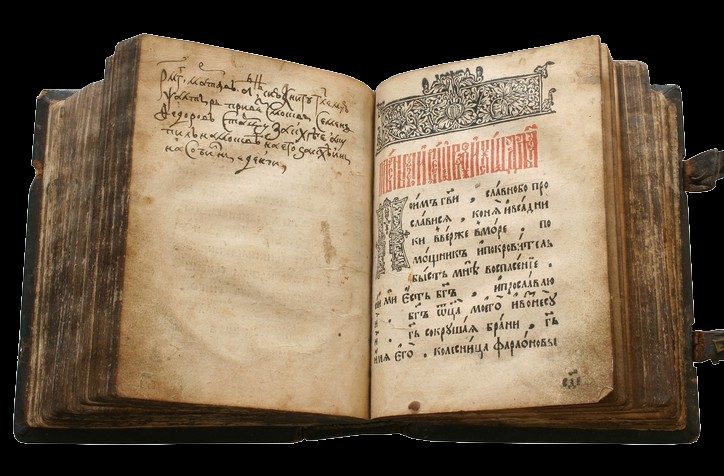

Михаил Федорович
Годы жизни:
22 июля 1596 г. – 23 июля 1645 г.Годы правления:
6 апреля 1613 г. – 23 июля 1645 г.Характеристика
Близ молодого царя не было людей, отличавшихся умом и энергией: все только одна рядовая посредственность. Прежняя печальная история русского общества приносила горькие плоды. Мучительства Ивана Грозного, коварное правление Бориса, наконец, смуты и полное расстройство всех государственных связей выработали поколение жалкое, мелкое, поколение тупых и узких людей, которые мало способны были стать выше повседневных интересов. При новом шестнадцатилетнем царе не явилось ни Сильвестра, ни А. Ф. Адашева прежних времен. Сам Михаил был от природы доброго, но, кажется, меланхолического нрава, не одарен блестящими способностями, но не лишен ума; зато не получил никакого воспитания и, как говорят, вступивши на престол, едва умел читать.
Н. И. КостомаровСемья
Семейная жизнь царя сложилась не сразу. Первая возлюбленная Михаила, выбранная им в 20 лет, не нравилась его матери инокини Марфе, девушку даже на какое-то время поселили во дворец, но вскоре ее обвинили в неизлечимой болезни и удалили со двора. После череды попыток выбрать жену среди представительниц иностранных дворов, Михаилу сосватали Марию Долгорукую, княжну из древнего рода черниговских князей, но молодая царица вскоре заболела и через 5 месяцев умерла. Только в 1626 году (на 30 году жизни) Михаил выбрал себе новую невесту - дочь бедного дворянина Евдокию Стрешневу, которая и на смотрины-то приехала только в качестве наперсницы одной из знатных девушек. В браке у них родилось 10 детей, из них шестеро умерли в детском возрасте. Ни одна из дочерей царя замуж не вышла, в результате девушки проводили в царском тереме всю свою жизнь. В те времена русский царевич мог жениться на особе более низкого статуса, тем самым возвышая ее. Царевна же не могла выйти замуж за человека ниже ее по статусу — следовательно, возможен был только равнородный брак. С другой стороны, замуж можно было выходить только за православного или принявшего православие (а других православных государств, кроме России, почти не существовало). Михаил Федорович предпринял попытку выдать замуж свою старшую дочь Ирину за сына датского короля герцога Вольдемара, но вопрос перехода в православие стал камнем преткновения, разрушившим планы царя. До 1710 года ни одна царевна из рода Романовых замуж так и не вышла.
Мария Долгорукова
Первая жена царя Михаила Федоровича, которую ему сосватала его мать инокиня Марфа. Свадьба состоялась 19 сентября 1624 г., однако вскоре царица занемогла и скоропостижно скончалась 6 января 1625 г.
?Евдокия Стрешнева
Вторая жена царя Михаила. За 19 лет брака у супругов родилось 10 детей, фактически является родоначальницей династии. Евдокия скончалась вскоре после смерти мужа, лишь на месяц пережив его. Евдокия стала основательницей многих богоугодных заведений, помогала нищим и церкви, однако, основные заботы ее были связаны с детьми, ведь самое главное для царицы было оставить наследника престола.
Ирина Михайловна
Дочь Евдокии Стрешневой и Михаила Федоровича, незамужняя. Годы жизни: 1627 - 1679. Судя по письмам, сестры Ирина, Анна и Татьяна оказывали существенное влияние на своего брата Алексея Михайловича.
Пелагея Михайловна
Дочь Евдокии Стрешневой и Михаила Федоровича. Годы жизни: 1628 - 1629 (умерла в младенчестве).
?Алексей Михайлович
Сын Евдокии Стрешневой и Михаила Федоровича, второй русский царь из династии Романовых. Годы жизни: 1629 - 1676.
Анна Михайловна
Дочь Евдокии Стрешневой и Михаила Федоровича, незамужняя. Годы жизни: 1630 - 1692.
?Марфа Михайловна
Дочь Евдокии Стрешневой и Михаила Федоровича. Годы жизни: 1631 - 1632 (умерла в младенчестве).
?Иоанн Михайлович
Сын Евдокии Стрешневой и Михаила Федоровича. Годы жизни: 1633 - 1639 (умер в возрасте 5 лет).
?Софья Михайловна
Дочь Евдокии Стрешневой и Михаила Федоровича. Годы жизни: 1634 - 1636 (умерла в младенчестве).
?Татьяна Михайловна
Дочь Евдокии Стрешневой и Михаила Федоровича. Годы жизни: 1636 - 1706. Активная сторонница реформ патриарха Никона.
?Евдокия Михайловна
Дочь Евдокии Стрешневой и Михаила Федоровича. Годы жизни: 1637 - 1637 (умерла вскоре после рождения).
?Василий Михайлович
Сын Евдокии Стрешневой и Михаила Федоровича. Годы жизни: 1639 - 1639 (умер в младенчестве).
?
Итоги правления
Внешняя политика
Избранному в 16 лет Земским собором 1613 года молодому царю досталась страна, которая была разрушена Смутой, со всех сторон подвергавшаяся нападениям, а также имевшая несколько претендентов на престол (шведский принц Карл Филипп, польский королевич Владислав и Иван, сын Марины Мнишек и Лжедмитрия II.).
Уже в 1614 году было разгромлено казачье войско Ивана Заруцкого, который поддерживал Марину Мнишек. Мнишек была доставлена в Москву, заточена в башне Коломенского кремля, где и скончалась, сын ее и сам Иван Заруцкий были казнены.
В 1617 году была закончена война со Швецией, которая воспользовавшись Смутой, захватила Новгород (находился под оккупацией 6 лет), а далее атаковала и Псков (осада в 1615 году была отбита). По условиям заключенного Столбовского мирного договора Россия теряла выход к Балтийскому морю, но возвращала себе Новгородские земли.
В 1618 году заключено Деулинское перемирие с Речью Посполитой (а позже в 1634 г. Поляновский мир). Польша и Литва сохранили за собой Смоленск и Северскую землю, но польский король и великий князь литовский Владислав отказался от притязаний на русский престол, а в Россию были возвращены все пленные, захваченные еще во время Смуты.
Внутреняя политика
Установление прочной централизованной власти на всей территории страны посредством назначения воевод и старост на местах. Была проведена опись всех поместных земель. Учреждён особый «приказ» (канцелярия) для приема и разбора жалоб от населения «на обиды сильных людей».
Преодоление тяжелейших последствий Смутного времени, восстановление нормального хозяйства и торговли, привлечение в страну специалистов из Англии и Голландии, которые привозили инвестиции и технологии, строили первые заводы и образовывали поселения. Уже в первой половине 17 века Россия начала экспортировать оружие собственного производства.
Освоение земель казаками-землепроходцами и присоединение к России земель по Яику, Прибайкалья, Якутии, выход к Тихому океану.
Была проведена реорганизация армии (1631—1634): создание полков «нового строя»: рейтарского, драгунского, солдатского. Именно при Михаиле началась военная реформа, при которой были созданы первые полки европейского образца с новейшими видами вооружения.
Культура и образование
На правление Михаила Романова приходится и начало светской живописи в России: по государеву указу 26 июля (5 августа) 1643 года на службу в Оружейную палату был принят житель Ругодива живописного дела мастер Иоанн Детерс, который обучал живописи русских учеников.
По настоянию патриарха Филарета (отец царя Михаила) был восстановлен разрушенный печатный двор и царская библиотека, была учреждена "правильня", где сверялись тексты древних рукописей, с книг снимали копии и рассылали по стране.
Начала выходить первая русская газета "вестовые письма", источником информации служили в основном иностранные газеты (регулярно выписывались с 1631), а также сообщения иностранных корреспондентов.
Материалы по теме в открытом доступе:
Книга Царь Михаил Федорович. Автор: Н.И. Костомаров. Президенсткая библиотека им. Б.Н. Ельцина
Статья Большая российская энциклопедия. Михаил Федорович. Автор: В. Н. Козляков
Видео Русские цари. Михаил Фёдорович Романов. Русская История. Исторический Проект. StarMedia
Видео Романовы. Фильм Первый. StarMedia. Babich-Design. Документальный Фильм